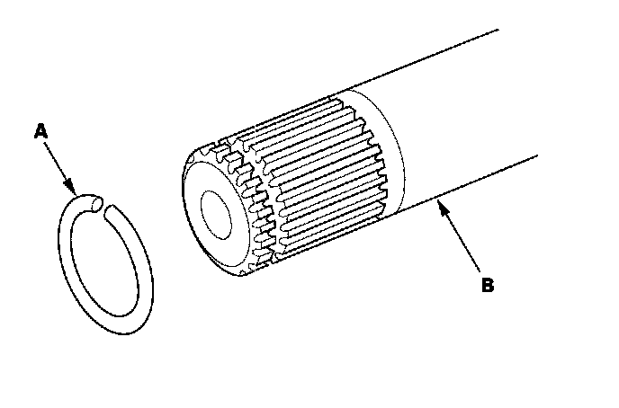

Rear Driveshaft Disassembly
Rear Driveshaft DisassemblySpecial Tools Required
Threaded adapter, 24 x 1.5 mm 07XAC-001020A
Inboard Joint Side
1. Remove the boot bands. Be careful not to damage the boot.
2. Make a mark (A) on each roller (B) and inboard joint (C) to identify the locations of the rollers and the grooves in the inboard joint. Then remove the inboard joint and place it on a shop towel (D). Be careful not to drop the rollers when separating them from the inboard joint.
3. Remove the circlip (A).
4. Make a mark on the spider (B) and driveshaft (C) to identify the position of the spider on the shaft.
5. Remove the spider and rollers using a commercially available bearing remover (D).
6. Wrap the splines on the driveshaft (A) with vinyl tape (B) to prevent damaging to the boot.
7. Remove the inboard boot (C) and ear clamp type boot band (D). Be careful not to damage the boot.
8. Remove the vinyl tape.
Outboard Joint Side
1. Remove the boot bands. Be careful not to damage the boot.
2. Slide the outboard boot (A) partially to the inboard joint side. Be careful not to damage the boot.
3. Wipe off the grease to expose the driveshaft and the outboard joint inner race.
4. Make a mark (A) on the driveshaft (B) at the same level as the outboard joint end (C).
5. Carefully clamp the driveshaft in a vise with a shop towel.
6. Remove the outboard joint (A) using the threaded adapter (B) and a commercially available 5/8"-18 UNF slide hammer (C).
7. Remove the driveshaft from the bench vise.
8. Remove the stop ring (A) from the driveshaft (B).
